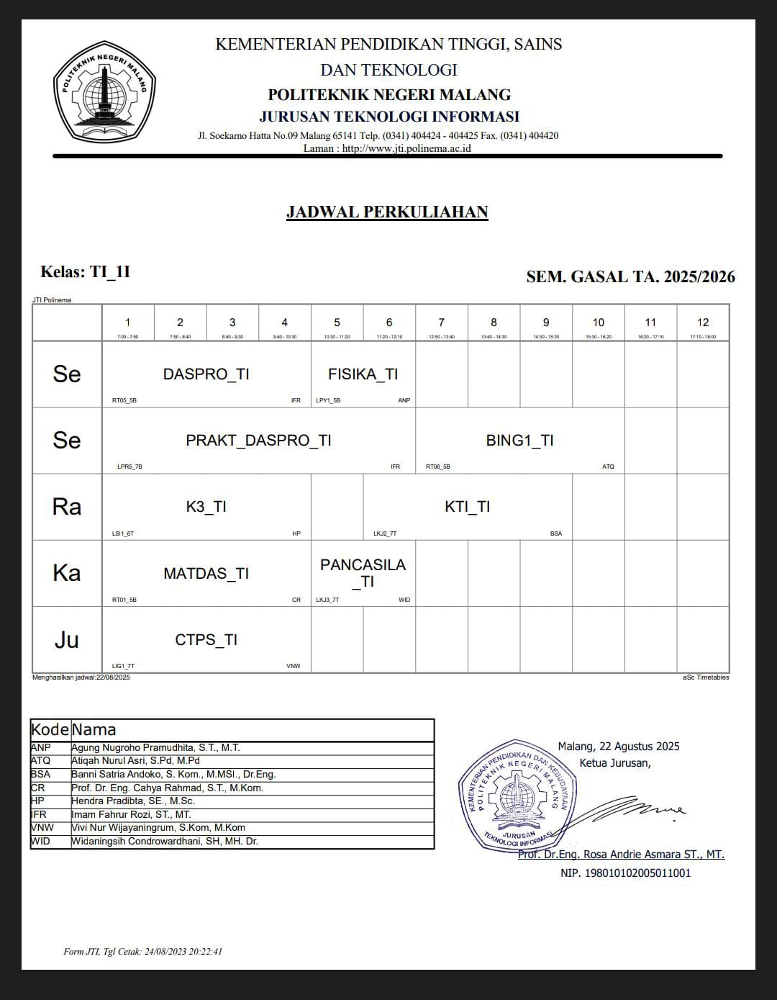

    <style>

body {
  padding-top: 10px; /* default for mobile (header) */
}

@media (min-width: 992px) {
  body {
    padding-top: 140px; /* desktop/laptop */
  }
}

/* JADWAL */
.jadwal-wrap {
  text-align: center;
}

.jadwal-img {
  max-width: 800px;
  width: 100%;
  border-radius: 10px;
  box-shadow: 0 8px 24px rgba(2, 6, 23, 0.06);
  margin: 12px 0;
}


</style>

<section class="section container">
            <section id="jadwal" class="section container">
                <h1 style="text-align:center;">Class Schedule for 1NFIX</h1>
                <!-- <p class="section-desc">(Jadwal ditampilkan dalam bentuk gambar — ganti file dengan foto jadwal kamu)</p> -->
                <div class="jadwal-wrap">
                
                <!-- <p class="small">Tip: gunakan foto yang jelas, rotasi & crop dulu agar terlihat rapi.</p> -->
                </div>
            </section>
</section>

